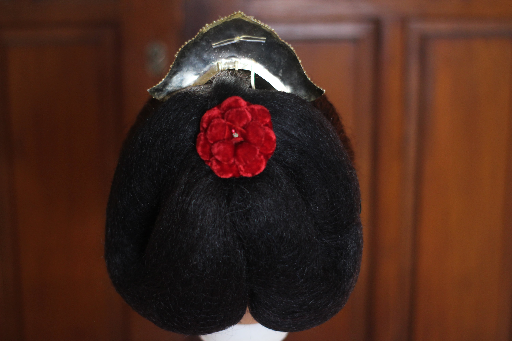
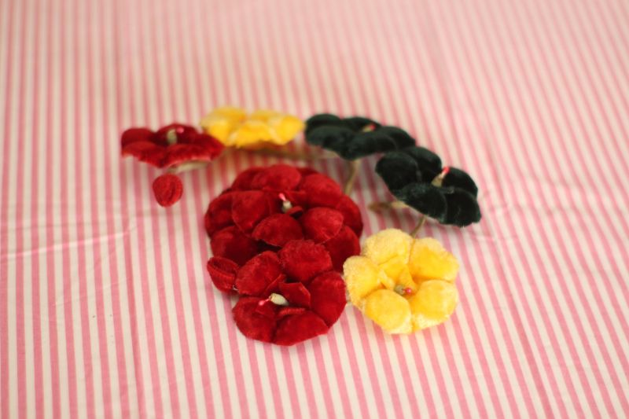
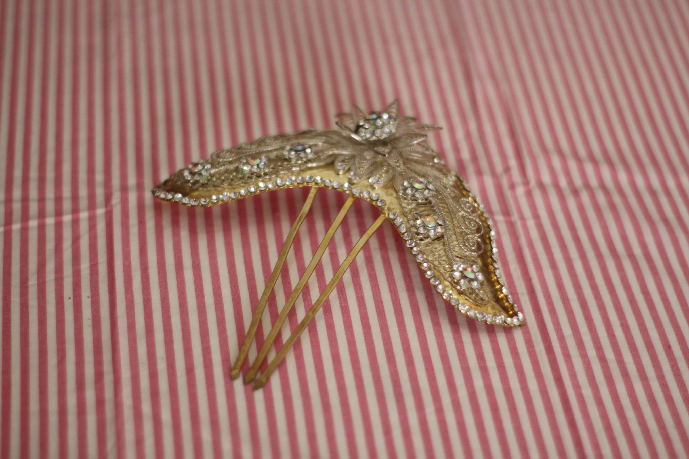

Ornamen
Perhiasan yang dipakai adalah Ceplok Jebehan yang terdiri dari:
a. Pada bagian tengah sanggul agak ke atas dipasang ceplok.

b. Pada kiri kanan sanggul dipasang dua tangkai bunga jebehan yang menjuntai ke bawah.

c. Pada bagian atas sanggul dipasang pethat berbentuk gunung.
